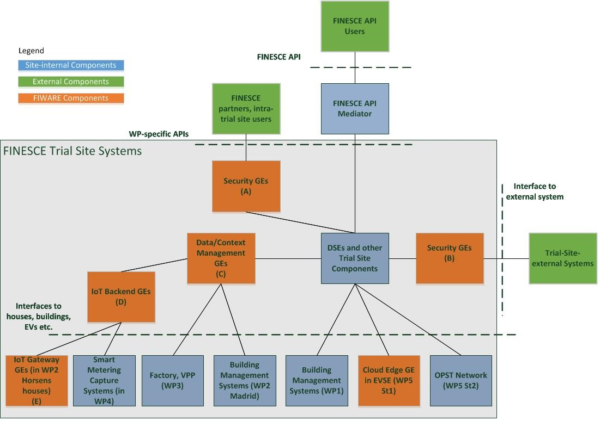

The FINESCE project uses several GEs from the FIWARE catalogue, a significant number of which have been fully integrated into the trial sites. We list the most important ones on this page.

| FIWARE Chapter | GE Name | WP1 | WP2 Horsens |
WP2 Acciona |
WP3 Factory |
WP3 FPL |
WP4 |
|---|---|---|---|---|---|---|---|
| Cloud Hosting | IaaS DataCenter Resource Management | - | - | - | - | - | |
| Self Service Interfaces | - | - | - | - | - | ||
| Object Storage | - | - | - | - | - | ||
| Security | Identity Management KeyRock | - | - | - | - | - | |
| Data/Media Context Management | Publish/Subscribe Broker - Orion | - | |||||
| Complex Event Processing | - | - | - | - | - | ||
| BigData Analysis | - | - | - | ||||
| IoT Services Enablement | IoT Broker - NEC | - | - | - | - | - | |
| Configuration Manager - Orion Context Broker | - | - | - | - | - | ||
| Gateway Data Handling - Esper4FastData | - | - | - | - | |||
| Protocol Adapter - ZPA | - | - | - | - | - | ||
| Apps/Data Ecosystems & Delivery | Application Mashup | - | - | - | - |